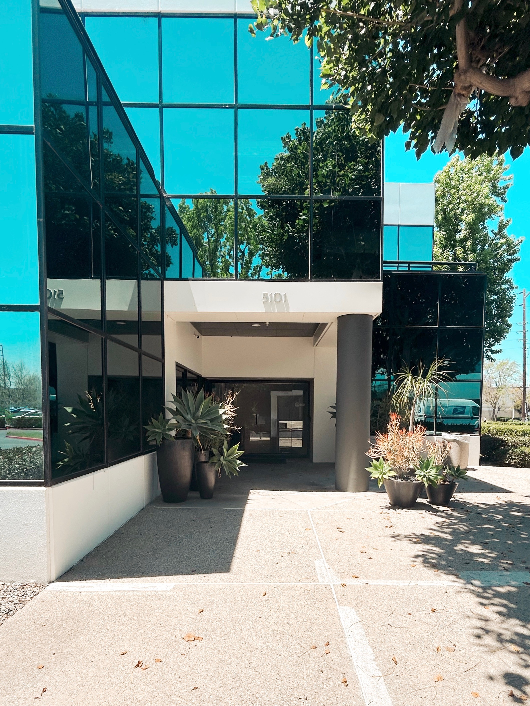
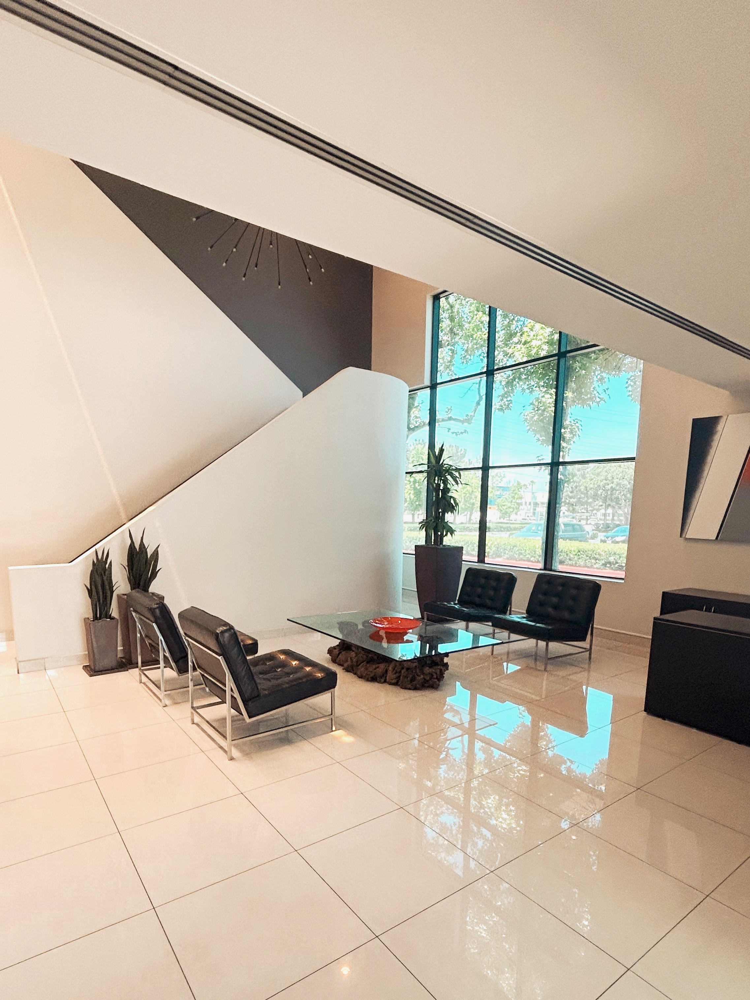
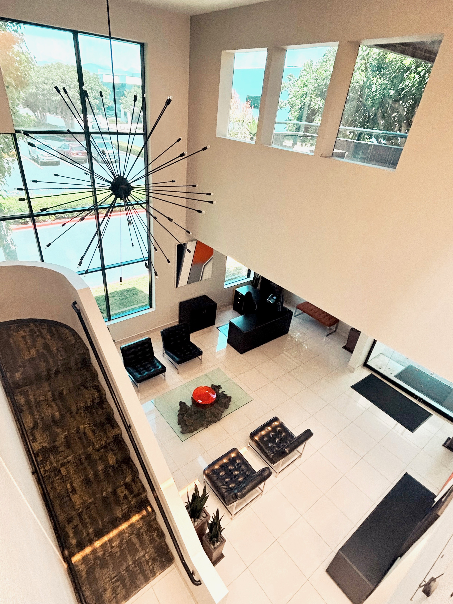
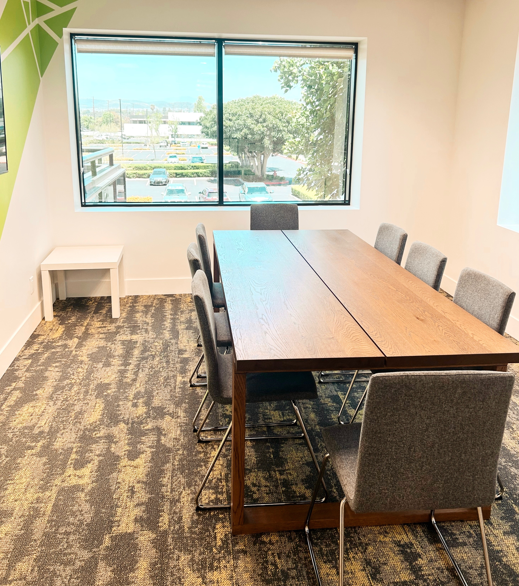
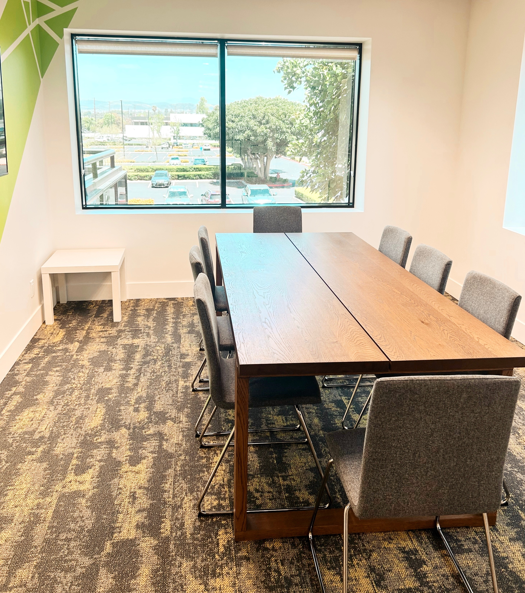
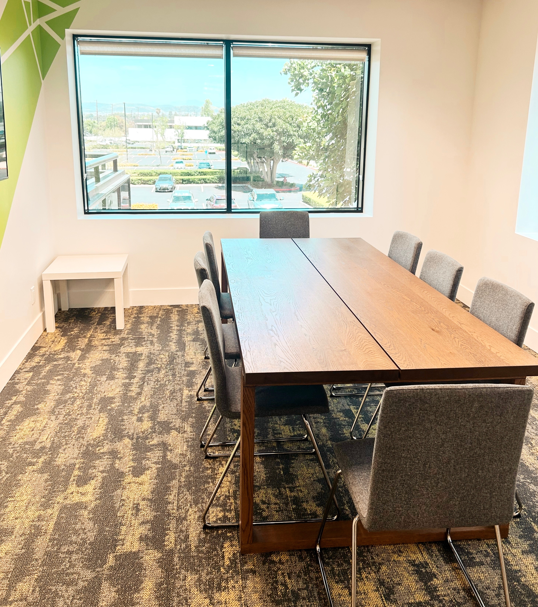
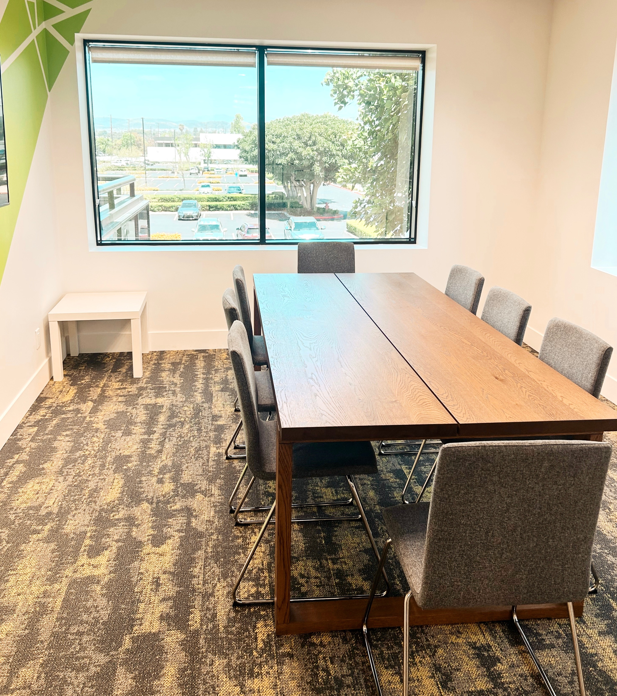

Take a Look Inside Our Office



 


Ronnie Smithey has worked as a Financial Advisor for over 23 years. He entered the field in 2003 to help individuals and business owners build, protect, and distribute their financial wealth. Today, he continues to support clients through every phase of their financial journey—from college savings and long-term care planning to retirement strategies.
Ronnie stays up to date with financial trends and market conditions to help guide clients through both stable and uncertain economic periods. He approaches each relationship as a financial partner, working to establish strong foundations for long-term financial security.
Outside of his professional work, Ronnie enjoys time with his wife and four children. He is actively involved in his local church and has volunteered with the local Little League for over six years, including three years on the board as Vice President and Coaching Coordinator.
Registered Representative, LPL Financial (2005–Present)
An independent Broker/Dealer and Registered Investment Advisor.
Financial Advisor, Trilogy Financial Services Inc. (2002–2005)
University of Redlands
B.A. in Economics, Minor in Business
